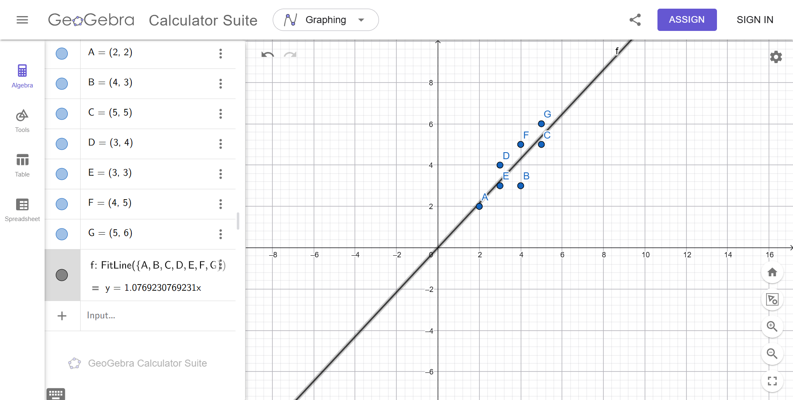

Analisa Regresi#
Analisa regresi adalah metode statistik yang digunakan untuk mengetahui hubungan antara dua variabel, yaitu variabel bebas (x) dan variabel terikat (y). Regresi digunakan untuk melihat pola data serta membantu memprediksi nilai di masa depan. Jika hasil regresi menunjukkan hubungan positif, maka saat nilai x meningkat, nilai y juga cenderung meningkat.
Langkah 1: Breakdown Data dan Pemetaan Variabel#
Berdasarkan grafik koordinat yang diberikan, terdapat 7 titik data (\(n = 7\)) dengan pasangan nilai \((X, Y)\) sebagai berikut:
Titik |
\(X\) (Variabel Independen) |
\(Y\) (Variabel Dependen) |
|---|---|---|
A |
2 |
2 |
B |
4 |
3 |
C |
5 |
5 |
D |
3 |
4 |
E |
3 |
3 |
F |
4 |
5 |
G |
5 |
6 |
Langkah 2: Pembentukan Matriks \(X\) dan Vektor \(Y\)#
Untuk menghitung intercept (\(\beta_0\)) dan slope (\(\beta_1\)) secara bersamaan, kita menambahkan kolom bias (berisi angka 1) di sebelah kiri kolom variabel \(X\).
Matriks \(X\) (Ukuran \(7 \times 2\)): Kolom 1 adalah bias (konstanta), Kolom 2 adalah nilai variabel \(X\).
Vektor \(Y\) (Ukuran \(7 \times 1\)): Berisi seluruh nilai variabel \(Y\).
Langkah 3: Menghitung Transpose Matriks \(X\) (\(X^T\))#
Transpose dilakukan dengan mengubah baris matriks \(X\) menjadi kolom. Matriks \(X^T\) yang dihasilkan kini berukuran \(2 \times 7\).
Langkah 4: Menghitung Perkalian Matriks \(X^T X\)#
Kita mengalikan matriks \(X^T\) (\(2 \times 7\)) dengan matriks \(X\) (\(7 \times 2\)) untuk mendapatkan matriks berukuran \(2 \times 2\).
Detail perhitungan setiap elemen matriks:
Baris 1, Kolom 1 (\(n\)):
Baris 1, Kolom 2 (\(\sum X\)):
Baris 2, Kolom 1 (\(\sum X\)):
Baris 2, Kolom 2 (\(\sum X^2\)):
Hasil akhir matriks \(X^T X\):
Langkah 5: Menghitung Invers Matriks \((X^T X)^{-1}\)#
Menggunakan rumus invers untuk matriks ukuran \(2 \times 2\), yaitu \(\frac{1}{\text{Determinan}} \begin{bmatrix} d & -b \\ -c & a \end{bmatrix}\).
Mencari Nilai Determinan:
\[\text{Det}(X^T X) = (a \times d) - (b \times c)\]\[\text{Det}(X^T X) = (7 \times 104) - (26 \times 26) = 728 - 676 = 52\]Menghitung Matriks Invers:
\[\begin{split}(X^T X)^{-1} = \frac{1}{52} \begin{bmatrix} 104 & -26 \\ -26 & 7 \end{bmatrix}\end{split}\]\[\begin{split}(X^T X)^{-1} = \begin{bmatrix} \frac{104}{52} & \frac{-26}{52} \\ \frac{-26}{52} & \frac{7}{52} \end{bmatrix} = \begin{bmatrix} 2 & -0.5 \\ -0.5 & 0.1346 \end{bmatrix}\end{split}\]
Langkah 6: Menghitung Perkalian Matriks \(X^T Y\)#
Kita mengalikan matriks \(X^T\) (\(2 \times 7\)) dengan vektor \(Y\) (\(7 \times 1\)) untuk menghasilkan vektor berukuran \(2 \times 1\).
Detail perhitungan setiap elemen vektor:
Elemen Baris 1 (\(\sum Y\)):
Elemen Baris 2 (\(\sum XY\)):
Hasil akhir vektor \(X^T Y\):
Langkah 7: Menghitung Nilai Akhir Koefisien Regresi (\(\hat{\beta}\))#
Langkah terakhir adalah mengalikan hasil matriks invers (Langkah 5) dengan hasil vektor \(X^T Y\) (Langkah 6) sesuai rumus: \(\hat{\beta} = (X^T X)^{-1} X^T Y\).
Mencari nilai masing-masing komponen \(\hat{\beta} = \begin{bmatrix} \beta_0 \\ \beta_1 \end{bmatrix}\):
Mencari nilai \(\beta_0\) (Intercept):
\[\beta_0 = (2 \times 28) + (-0.5 \times 112)\]\[\beta_0 = 56 - 56 = 0\]Mencari nilai \(\beta_1\) (Slope / Kemiringan):
\[\beta_1 = (-0.5 \times 28) + \left(\frac{7}{52} \times 112\right)\]\[\beta_1 = -14 + \frac{784}{52}\]\[\beta_1 = -14 + 15.0769 = 1.0769\]
Maka didapatkan hasil akhir vektor parameter:
Kesimpulan Akhir#
Berdasarkan urutan perhitungan analitik di atas, konstanta persamaan regresi yang didapatkan adalah:
\(\beta_0\) (Intercept) = \(0\)
\(\beta_1\) (Slope) = \(1.0769\) (atau dalam pecahan eksak senilai \(\frac{14}{13}\))
Sehingga, model fungsi persamaan garis regresi linier untuk data Anda adalah:
\(Y = 0 + 1.0769X \quad \Rightarrow \quad Y = 1.0769X\)
Implementasi Python#
import numpy as np
from sklearn.linear_model import LinearRegression
# 1. INPUT DATA DARI GEOGEBRA
# Matriks X (Fitur/Prediktor) harus dalam bentuk 2D array [[x]]
X = np.array([[2], [4], [5], [3], [3], [4], [5]])
Y = np.array([[2], [3], [5], [4], [3], [5], [6]])
print("======= METODE 1: SKLEARN =======")
# Inisialisasi dan latih model
model = LinearRegression()
model.fit(X, Y)
# Mengambil hasil koefisien dari sklearn
intercept_sklearn = model.intercept_[0]
coef_sklearn = model.coef_[0][0]
print(f"Intercept (beta_0) : {intercept_sklearn:.4f}")
print(f"Koefisien (beta_1) : {coef_sklearn:.4f}")
print("\n======= METODE 2: ANALITIK (NUMPY) =======")
# Menambahkan kolom angka 1 untuk matriks intercept
X_bias = np.c_[np.ones((X.shape[0], 1)), X]
# Menghitung dengan rumus: (X^T * X)^(-1) * X^T * Y
beta_analitik = np.linalg.inv(X_bias.T @ X_bias) @ X_bias.T @ Y
print(f"Intercept (beta_0) : {beta_analitik[0][0]:.4f}")
print(f"Koefisien (beta_1) : {beta_analitik[1][0]:.4f}")
======= METODE 1: SKLEARN =======
Intercept (beta_0) : -0.0000
Koefisien (beta_1) : 1.0769
======= METODE 2: ANALITIK (NUMPY) =======
Intercept (beta_0) : 0.0000
Koefisien (beta_1) : 1.0769
Implementasi geogebra#

Garis regresi yang saya buat menunjukkan hubungan linear positif antara nilai x dan y. Dari hasil perhitungan diperoleh persamaan garis regresi y=1.0769x. Artinya, setiap kenaikan nilai x sebesar 1 satuan akan meningkatkan nilai y sekitar 1.07 satuan. Titik-titik data juga terlihat cukup dekat dengan garis regresi, sehingga menunjukkan bahwa data memiliki pola hubungan yang cukup baik dan dapat digunakan untuk prediksi.